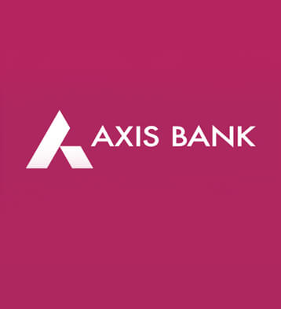

Graduation: Illinois Institute of Technology (expected fall 2024)
Certificates
Bachelor of Pharmacy
Finances and Accounting
Work Experience

Worked as Assistant Manager in the Sales and Operations Department
I was involved in Handling day to day banking operations, RTGS, NEFT, Transfer in A2A (axis bank to axis bank account transfer), demand draft, cash deposit and withdraw slip posting(if has authority of posting vouchers)
Processing account opening forms, transfer of other branch accounts, debit card issues.
Skills
Programming: Python, SQL
Productivity & Business Intelligence Tools: Microsoft Excel, Microsoft Word, Tableau